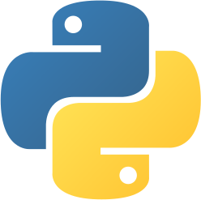
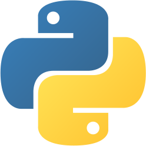
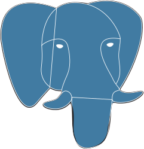
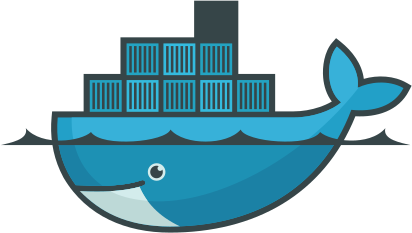
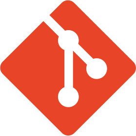
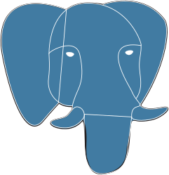
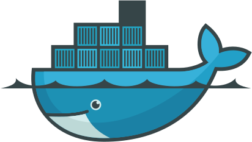
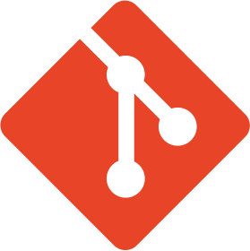
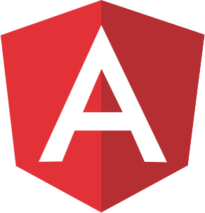
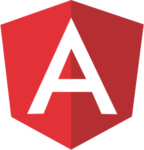

Estagiário de Infraestrutura TI / Chianca Softwares

2023 - até o momento
Suporte técnico em infraestrutura de TI, incluindo hardware e
software
Auxilio na administração de redes e monitoramento de servidores
Colaboro na resolução de problemas de conectividade e segurança
Realização de manutenção preventiva e gerenciamento de redes
Participação em projetos de atualização e melhoria da
infraestrutura
Documentação e manutenção da base de conhecimento de TI.
Técnico de Informática / JFTech
2020 - 2023
Identificação e solução de problemas técnicos em hardware, software e
redes
Suporte técnico de primeira linha e orientação aos usuários
Instalação, configuração e manutenção de sistemas e aplicativos
Realização de manutenção preventiva e gerenciamento de redes
Implementação de estratégias de backup e recuperação de dados
Condução de sessões de treinamento para usuários finais.
Projeto cardápio digital / Developer: Jefferson Fonseca
2023
Objetivo:
Desenvolver um sistema de cardápio digital completo com
funcionalidades de CRM (Customer Relationship Management) e um sistema de cadastro de clientes.
O projeto é uma aplicação web fullstack, onde eu fui o responsável tanto pelo desenvolvimento do
front end quanto pelo back end.
Front End:
HTML, CSS e JavaScript para criar uma interface de usuário interativa e responsiva.
Frameworks e bibliotecas front-end como React.js ou Vue.js para facilitar o desenvolvimento do usuário final.
Integração com APIs para acessar dados do back end.
Back End:
Node.js, Express.js para criar um servidor e manipular as requisições do cliente.
PostgreSQL como banco de dados para armazenar informações sobre o cardápio, clientes e dados de CRM.
Autenticação e autorização para proteger as rotas sensíveis e garantir a segurança dos dados do cliente.
API RESTful para comunicação entre o front end e o banco de dados.
Funcionalidades do Cardápio Digital:
Exibição dinâmica do menu do restaurante, incluindo categorias, itens, preços e descrições.
Capacidade de realizar pedidos online, adicionar itens ao carrinho e fazer checkout.
Opções de personalização para os itens do menu (por exemplo, escolha de ingredientes extras).
Atualizações em tempo real sobre a disponibilidade dos itens no menu. Todo o conteúdo responsivo para dispositivos móveis.
Funcionalidades do CRM e Cadastro de Clientes:
Armazenamento seguro de informações do cliente, como nome, endereço de e-mail, número de telefone, etc.
Registro de histórico de pedidos para cada cliente.
Análise de dados para fornecer insights sobre preferências dos clientes e comportamento de compra.
Envio de e-mails promocionais ou ofertas especiais para clientes cadastrados.
Outras Considerações:
Implementação de um painel de administração para gerenciar o cardápio, visualizar pedidos, e acessar dados do CRM.
Implementação de funcionalidades de busca para ajudar os clientes a encontrar rapidamente os itens desejados no cardápio.
Design intuitivo e amigável para melhorar a experiência do usuário.


 


 





 
